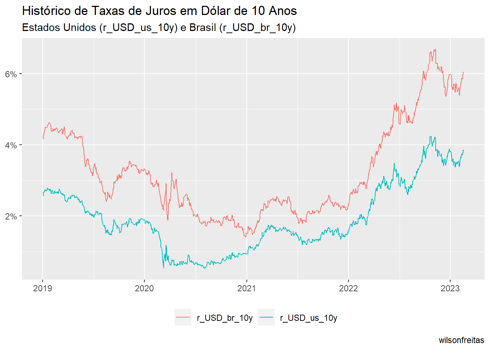

library(Quandl)
yc_all <- Quandl("USTREASURY/YIELD")Em um post recente.
library(rb3)
library(bizdays)
library(tidyverse)
library(fixedincome)dusd <- yc_usd_mget(
first_date = "2019-01-01",
last_date = preceding(Sys.Date() - 1, "Brazil/ANBIMA"),
cache_folder = "../../../rb3-data"
)unique(dusd$refdate) |> map(function(date, df) {
df_curve <- df |>
filter(refdate == date, cur_days > 0) |>
filter(!duplicated(cur_days))
curve <- spotratecurve(
df_curve$r_360,
df_curve$cur_days,
"simple", "actual/360", "actual",
refdate = date
)
interpolation(curve) <- interp_flatforward()
curve
}, df = dusd) -> curves_usdcurves_usd |>
map_dfr(\(x) tibble(
refdate = x@refdate,
r_USD_br_10y = as.numeric(x[[3600]])
)) -> rates_usd_10yyc_all |>
rename(refdate = "Date", r_USD_us_10y = `10 YR`) |>
mutate(r_USD_us_10y = r_USD_us_10y / 100) |>
inner_join(rates_usd_10y, by = "refdate") |>
# filter(!is.na(r_USD_br_10y)) |>
tidyr::pivot_longer(c(r_USD_br_10y, r_USD_us_10y),
names_to = "rates"
) |>
ggplot(aes(x = refdate, y = value, colour = rates)) +
geom_line() +
labs(colour = NULL) +
theme(legend.position = "bottom") +
labs(
x = NULL, y = NULL,
title = "Histórico de Taxas de Juros em Dólar de 10 Anos",
subtitle = "Estados Unidos (r_USD_us_10y) e Brasil (r_USD_br_10y)",
caption = "wilsonfreitas"
) +
scale_y_continuous(labels = scales::percent) +
theme(legend.position = "bottom")